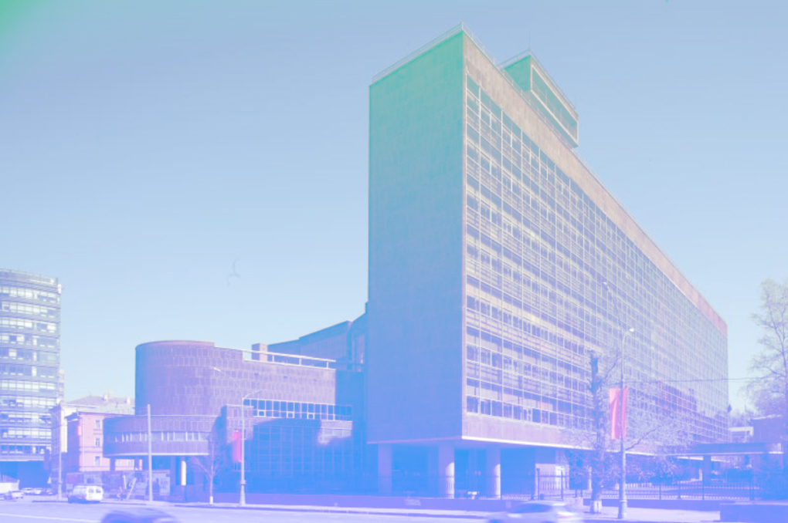

Здание Центросоюза
Здание Центросоюза (Наркомлегпро́ма) — офисное здание, возведённое в 1928—1936 годах в центре Москвы по проекту Ле Корбюзье, при участии П. Жаннере и Н. Я. Колли. Представляет собой комплекс корпусов, обращённый одновременно на две параллельные улицы — Мясницкую и проспект Академика Сахарова. Здание относится к числу наиболее интересных архитектурных раритетов не только Москвы, но и мира, представляя собой созданный знаменитым архитектором образец европейского модернизма конца 20-х годов XX века.
Первоначально это было административное здание Всесоюзного общества кооператоров (для которого и проводился конкурс), затем Наркомлегпром СССР, Министерство текстильной промышленности СССР, с 1959 года — ЦСУ СССР. В настоящее время здесь располагается Федеральная служба государственной статистики — Росстат и Федеральная служба по финансовому мониторингу.
История проекта и характеристика
Идея строительства здания для размещения Центросоюза возникла во времена НЭПа, когда основой экономики стали различные кооперативные общества. Под новое здание по предложению архитектора Б. М. Великовского в 1925 году выбрали место между двумя параллельными улицами — Мясницкой и планируемой к прокладке Ново-Мясницкой улицей (ныне — проспект Академика Сахарова), на их пересечении с проектируемым бульваром, идущим от Огородной Слободы.
На проектирование здания в 1928 году был объявлен международный открытый конкурс, в котором приняли участие братья Александр и Виктор Веснины, Б. М. Великовский, С. Е. Чернышёв, И. И. Леонидов, А. Д. Крячков и другие. Конкурс проходил в три этапа и в первом из них одержал победу Б. М. Великовский. Однако по результатам всех трёх этапов победу одержал Ле Корбюзье.
Здание Центросоюза — один из первых в Европе больших офисных комплексов со сплошным остеклением. Первое, что бросается в глаза при подходе к нему, — это гигантские поверхности стекла на фасадах, открытые стойки-опоры, поддерживающие блоки офисов, свободные пространства первого этажа (под зданием можно свободно пройти), горизонтальные крыши, красновато-коричневая облицовка стен из розового артикского туфа. Всё это — характерные особенности творческой манеры Ле Корбюзье начала 30-х годов (за исключением разве что облицовки), яркая иллюстрация его же известных «Пяти отправных точек современной архитектуры». В зданиях комплекса предусмотрены рабочие места для 3500 служащих, а также большой конференц-зал (выделенный отдельным блоком), клубные помещения, читальный зал, ресторан и многое другое. В первом этаже расположен просторный входной вестибюль, с открытыми лестницами и пандусами (наклонными пешеходными рампами) для связи между этажами.
Здание Центросоюза, этот модернистски осмысленный офис, весьма сходен по программе со зданием Министерства здравоохранения и образования в Рио-де-Жанейро (арх-ры Л. Коста, О. Нимейер, при участии Ле Корбюзье 1936), где также присутствуют открытые колонны в основании здания, большие поверхности стекла, разделение объёмов по их функции. Близкий аналог Центросоюзу и «Швейцарский павильон» в Париже (арх. Ле Корбюзье, 1931), в котором основной блок также покоится на колоннах, а сплошное остекление фасада «вставлено» в раму из камня. Можно добавить к этому и здание Секретариата ООН, автором которого тоже считается Ле Корбюзье 1947. Секретариат ООН — это, образно говоря, не что иное, как поставленный вертикально офисный блок Центросоюза. Как и все эти упомянутые здания, Центросоюз являет собой образчик «интернационального стиля», повсеместно вошедшего в моду с начала 1950-х годов.
Существует вероятность, что здание Центросоюза на Мясницкой улице в Москве, построенное по проекту Ле Корбюзье, может быть включено в список Всемирного наследия вместе с другими постройками этого мастера, представляемыми Францией.
Строительство
Строительство комплекса велось под надзором Николая Колли, эрудированного, авторитетного архитектора из группы конструктивистов. Он состоял в переписке с Ле Корбюзье, согласовывая с ним все изменения проекта. Ле Корбюзье дважды приезжал в Москву на строительство здания — в 1929 и в 1930 годах; в ходе этих визитов в проект были внесены изменения, в частности, были расширены корпуса в сторону современного проспекта Академика Сахарова и изменено сопряжение корпусов. Именно благодаря авторитету и настойчивости Колли комплекс Центросоюза построен с весьма хорошим для тех времен качеством. Курировало стройку крыло Троцкого, но после того, как в конце 1920-х годов в стране произошли известные перемены в политическом курсе, а затем и в архитектурном — в сторону «государственного классицизма», — проект был приостановлен на несколько лет. С 1930 года Ле Корбюзье в Москве не бывал, и реализацией проекта целиком занимался Н. Я. Колли. Завершалось строительство Центросоюза в 1933—1937 годах.
По предложенным идеям проект Центросоюза Ле Корбюзье был крайне новаторским, опережающим время, — как в отношении примененных материалов и конструкций, так и по своему архитектурному облику. Причем новаторским не только для России, где в ту пору существовал свой сильный архитектурный авангард, но и для Европы. В офисных блоках Центросоюза применена конструкция типа железобетонной этажерки-каркаса, позволяющая свободно планировать этажи, что для строительной практики России было новинкой. Корбюзье предложил также навесные герметичные стеклянные стены-экраны с вакуумом вместо воздуха между двумя слоями стекла — с целью теплоизоляции внутренних помещений. Вдобавок к этому в здании предусматривалась внутренняя система аэрации — кондиционирования. Это технологическое решение, имевшее целью обеспечить комфортные условия для работников при любых погодных условиях, зимой и летом, в силу ограниченных возможностей того времени было осуществлено далеко не полностью.
15 октября 2015 года перед фасадом здания, выходящим на Мясницкую улицу, открыт памятник Ле Корбюзье (авторы — скульптор А. В. Тыртышников и архитектор А. И. Воскресенский).